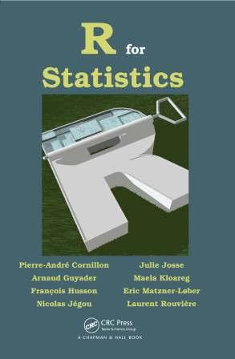
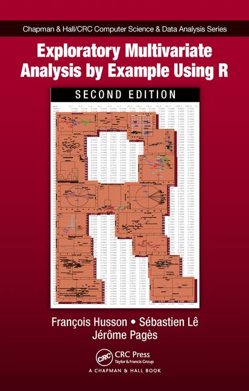
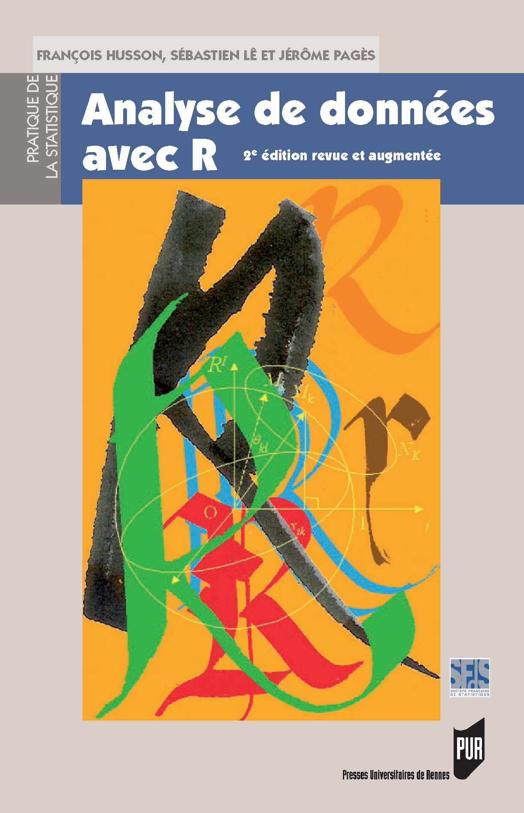
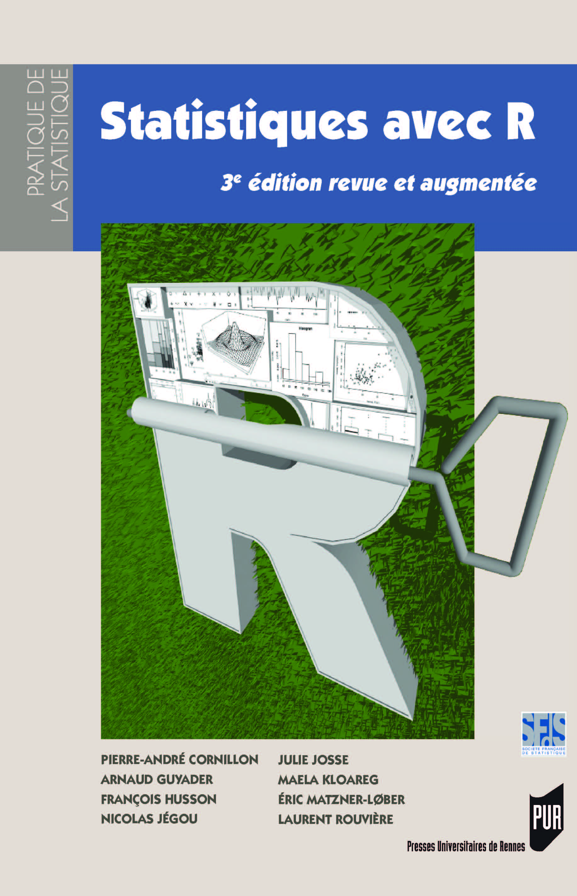
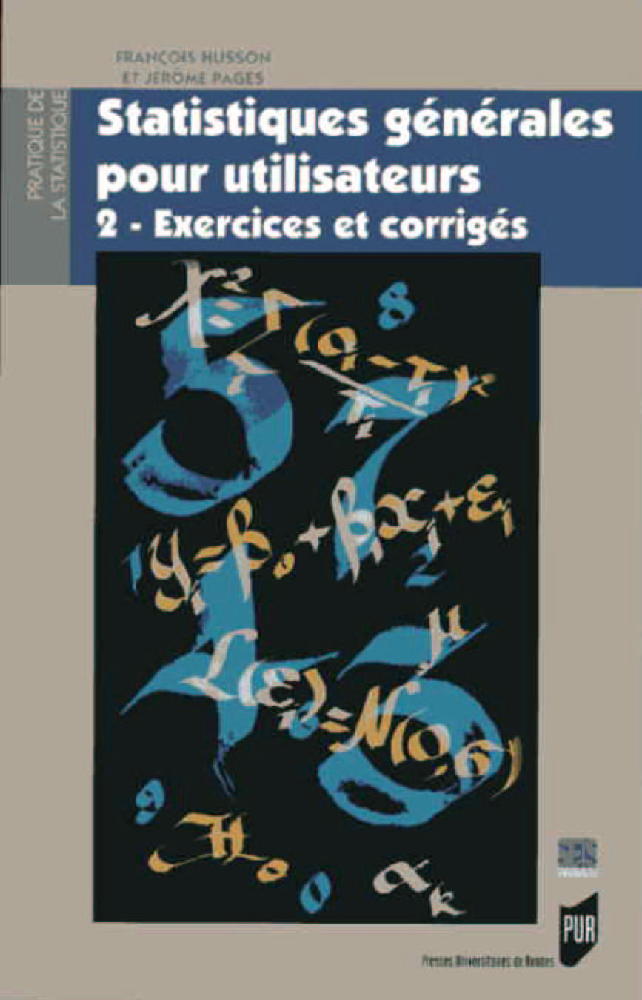

Teaching activities
(PDF documents are in french)
Sensometry
- Slides on characterization of products, performance of a panel (PDF)
- Slides on preference mapping (PDF)
- Slides on napping (PDF)
- Triangular test (PDF)
Data mining and text mining
- Data set for Principal Components Analysis
- Data set for Correspondence Analysis
- Data set for Multiple Correspondence Analysis
- Data set for hierarchical classification
Analysis of variance
Books (in english)
 | Cornillon, P-A., Guyader, A. Husson, F., Jégou, N., Josse, J., Kloareg, M., Matzner-Lober, E. & Rouvière, L. (2012). To be published. |
 | F. Husson, S. Lê & J. Pagès. 2nd edition. (2017) Exploratory Multivariate Analysis by Example Using R. Chapman & Hall/CRC Computer Science & Data Analysis. Order. Data used as example |
Livres en français
 | F. Husson, S. Lê & J. Pagès |
 | P-A. Cornillon, A. Guyader, F. Husson, N. Jégou, J. Josse, M. Kloareg, E. Matzner-Lober, L. Rouvière. |
 | Husson F. et Pagès J. |
Course on Exploratory Multivariate Data Analysis (in English)
This course is a complete course on Exploratory Multivariate Data Analysis (links in blue correspond to the course video, links in brown correspond to the software tutorials).
1. Principal Component Analysis (PCA)
2. Correspondence Analysis (CA)
3. Multiple Correspondence Analysis (MCA) | 4. Clustering
5. Multiple Factor Analysis
To conclude |
Vidéos sur le module de sensométrie
Cet ensemble de vidéos propose un cours de sensométrie.
Recueil de données chocolat : fiche descriptive
1. Introduction | 2. Caractérisation de produits |
3. Evaluation de la performance d'un jury | 4. Construction d'un espace produits |
5. Cartographie des préférences | 6. Analyser des données de catégorisation |
Tutorials
Tutorial useR! 2015
The tutorial will take place in Aalborg. You can print the slides. If you want to use your laptop, you should install the following packages: FactoMineR, missMDA, VIM, Amelia, norm, mice. You can also download the two datasets.
- Slides of the presentation
- Ozone data: dataset, lines of code
- Ecological data: dataset, lines of code
Vidéos de quelques tutoriels sur R
Vous trouverez ici des vidéos pour mettre en oeuvre différentes méthodes statistiques grâce au logiciel R.
Cours divers
Cours de statistique générale (niveau L3)
- Régression multiple : diaporama, version 4 pages
- Analyse de variance : diaporama, version 4 pages
- Plans fractionnaires : diaporama, version 4 pages, vidéo (1h30)
Cours sur les plans d'expériences
- Exercice d'introdution aux plans fractionnaires
- Cours sur les plans fractionnaires : diaporama, version 4 pages, vidéo (1h30)
- Exercice d'introduction aux plans continus
- Cours sur les plans continus : diaporama, version 4 pages
- Cours pour plan avancés (plus de 2 modalités, plans optimaux) : diaporama, version 4 pages
Cours de sensométrie (M2)
- Questions-introduction
- Construction d'un espace produit - comparaison des espaces produits de plusieurs panels
- Cartographie des préférences
- Catégorisation de produits
- Tri hiérarchique
- Traitement de données recueillies par nappes
Cours avancés (niveau M2)
- Evaluation de modèles : diaporama, version 4 pages, jeu de données
- Modèles GAM : diaporama, version 4 pages, jeu de données, code R
- Cartes de contrôle (carte CUSUM) : diaporama, version 4 pages
Projet étudiant (module de sensométrie)
Projet de sensométrie 2018:
- Méthode JAR (diaporama)
- Méthode CATA (diaporama)
- Projective Flash Profile (diaporama)
- Digit Napping (diaporama, script)
- Dominance temporelle des sensations (diaporama)
Exposés de 2015:
- Dominance Temporelles des sensations
- Méthode du profil idéal (diaporama, code R)
- Analyse de données CATA (diaporama, code, données)
Projets R (2015-16)
- Représentation 3D avec R (diaporama, démo1, démo2)
- Analyse du web (diaporama, script sur rvest et Rfacebook)
- ReporteR (diaporama, script)
- Swirl (diaporama,démo cours)
- Tessera (diaporama, script)
- Création de package (diaporama)
- Visualisation 3D (diaporama, script carto, script googlvis, script RgoogleMaps, leaflet)
- Autour de shiny (diaporama, scripts)